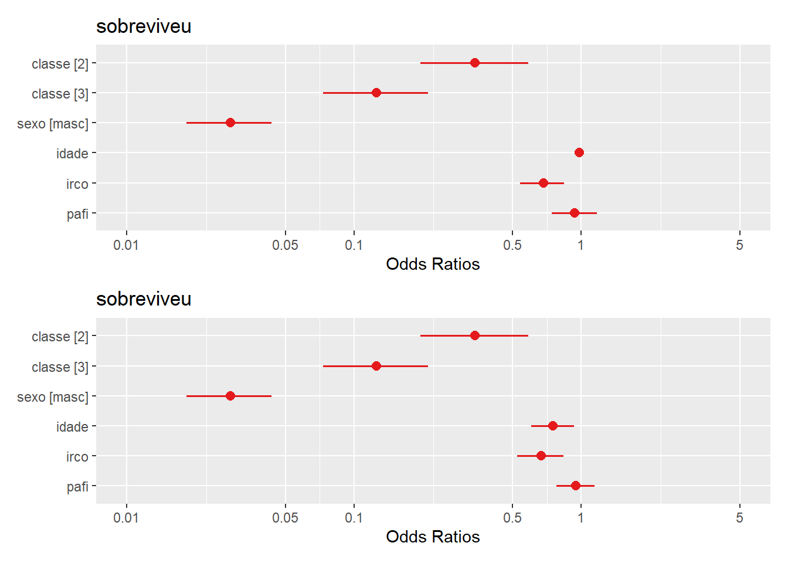
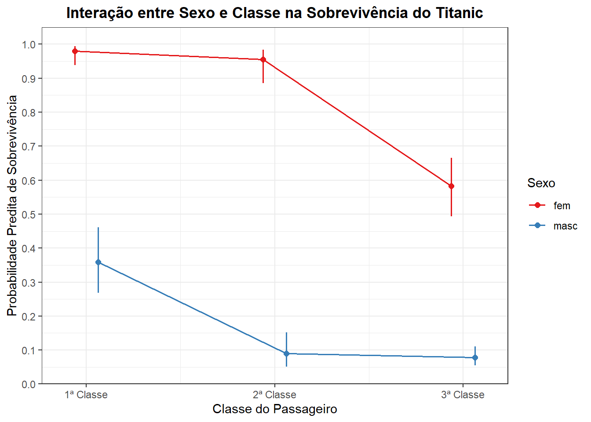
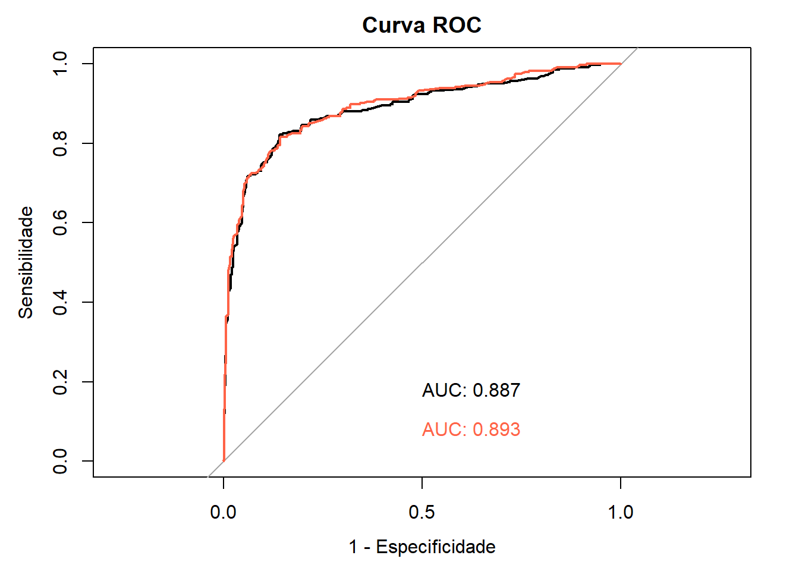
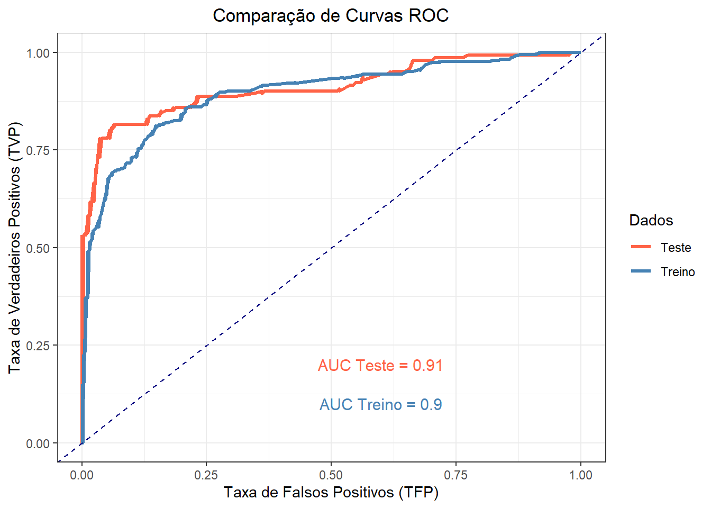
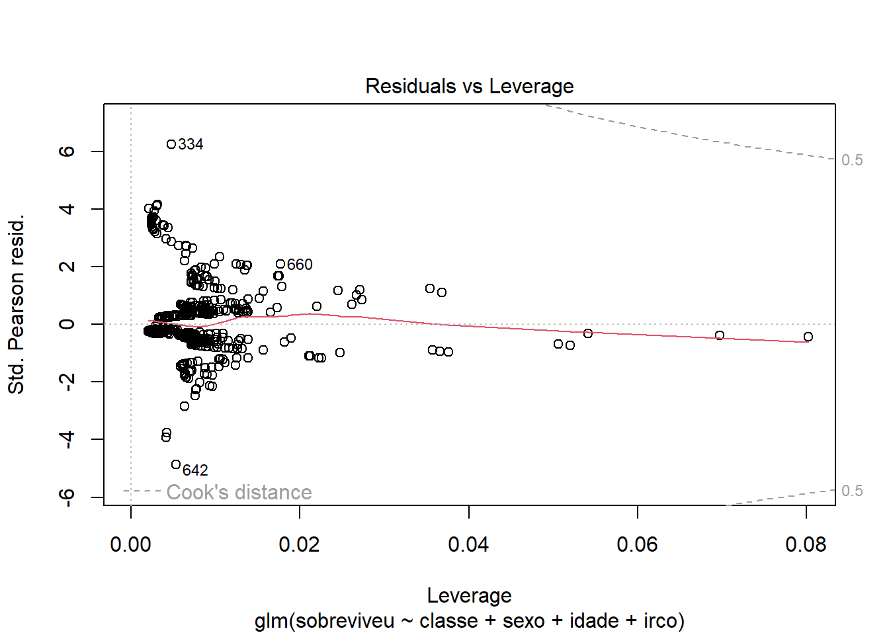

pacman::p_load(caret,
dplyr,
flextable,
ggeffects,
ggplot2,
knitr,
mice,
patchwork,
performance,
pROC,
readxl,
sjPlot)24 Regressão Logística Binária
24.1 Pacotes necessários neste capítulo
24.2 Introduçao
A regressão logística (também conhecida como regressão logit ou modelo logit) foi desenvolvida, em 1958, como um a extensão do modelo linear pelo estatístico britânico David Cox (1924-2022) (1). Pertence a uma família, denominada Modelo Linear Generalizado (GLM) e é um modelo de regressão em que o desfecho Y é categórico.
A regressão logística permite estimar a probabilidade de uma resposta categórica com base em uma ou mais variáveis preditoras (X). Possibilita informar se a presença de um preditor aumenta (ou diminui) a probabilidade de um determinado desfecho em uma porcentagem específica. No caso em que Y é binário - ou seja, assume apenas dois valores, 0 e 1, que representam desfechos como aprovação/reprovação, sim/não, vivo/morto ou saudável/doente, tem-se a regressão logística binária.
Na regressão logística binária, as variáveis que afetam a probabilidade do resultado são medidas como Odds Ratio, que são chamadas de Odds Ratios ajustadas (2).
Na regressão linear, os valores das variáveis desfecho são preditos a partir de uma ou mais variáveis explicativas. Na regressão logística, uma vez que o desfecho é binário, a probabilidade de o desfecho ocorrer é calculada com base nos valores das variáveis explicativas. A regressão logística é semelhante à regressão linear na medida em que uma equação de regressão pode ser usada para prever a probabilidade de ocorrência de um desfecho. No entanto, a equação de regressão logística é expressa em termos logarítmicos (ou logits) e, portanto, os coeficientes de regressão devem ser convertidos para serem interpretados.
Embora as variáveis explicativas ou preditores no modelo possam ser variáveis contínuas ou categóricas, a regressão logística é mais adequada para medir os efeitos das exposições ou variáveis explicativas que são variáveis binárias. Variáveis contínuas podem ser incluídas, mas a regressão logística produzirá uma estimativa de risco para cada unidade de medida. Assim, a suposição de que o efeito de risco é linear sobre cada unidade da variável deve ser atendida e a relação não deve ser curva ou ter um ponto de corte sobre o qual o efeito ocorre. Além disso, as interações entre variáveis explicativas podem ser incluídas (2). Os casos em que a variável dependente tem mais de duas categorias de resultados podem ser analisados com regressão logística multinomial, não mostrada neste livro.
24.3 Função Logistica
Na regressão logística, para a estimação dos coeficientes (coeficientes \(\beta\)) das variáveis independentes, utiliza-se o modelo logit (3):
\[ logit_{i} = ln(\frac{p}{1-p})=b_{0} + b_{1}x_{1} +...+ b_{n}x_{n} \] ou
\[ logit_{i} = ln(\frac{p}{1-p})=e^{b_{0} + b_{1}x_{1} +...+ b_{n}x_{n}} \]
onde p é a probabilidade de desfecho.
A função logística transforma valores entre \(-\infty\) a \(+\infty\) em valores entre 0 e 1, de modo que os números que especificam as probabilidades estarão entre 0 e 1. Esse termo logarítmico é chamado de \(log_{OR}\) (razão de chances logarítmica) ou logit. As chances (odds) associadas a alguma probabilidade são \(p/(1-p)\), o que é evidente se for entendido que um evento com chances a para b significa que em \(a+b\) tentativas independentes e identicamente distribuídas, espera-se um sucesso. Portanto, a probabilidade de sucesso deve ser \(a/(a+b)\).
Invertendo, se a probabilidade de sucesso é \(a/(a+b)\), então a razão se torna \([a/(a+b)]/[1-a/(a+b)]\) ou \(a/b\), que é a razão de chances ou odds ratio.
Para concluir o modelo, é necesário especificar a distribuição do desfecho \(Y_{i}\). Ela é binomial com probabilidade de sucesso p, de modo que nenhum parâmetro extra, como um desvio padrão, é necessário (4).
A regressão logística frequentemente utiliza a curva logística (Figura 24.1) para assim representar a relação entre a variável dependente e as independentes. Os valores previstos, portanto permanecem entre 0 e 1, sendo definidos pelos coeficientes estimados.

A estimação dos coeficientes na regressão logística, diferentemente da regressão múltipla que utiliza o método dos mínimos quadrados, é realizada através da máxima verossimilhança. Este método busca encontrar as estimativas mais prováveis dos coeficientes e maximizar a probabilidade de ocorrência de um evento. A qualidade do ajuste do modelo é avaliada pelo “pseudo” \(R^2\) e pela análise da precisão preditiva (matriz de confusão).
O valor da verossimilhança (likelihood) é semelhante ao procedimento das somas dos quadrados na regressão múltipla, estimando o quão bem o método de máxima verossimilhança se ajusta ao modelo. O ajuste da estimação do modelo é dado pelo valor de -2 vezes o logaritmo da verossimilhança (-2LL), sendo que, quanto menor este valor, melhor o modelo (5).
24.4 Pressupostos da regressão logística
Para garantir que a regressão seja adequada, para melhorar a precisão do modelo, assumimos quatro pressupostos principais:
- Independência dos dados: o valor de uma observação não influencia ou afeta o valor de outras observações. Este é o pressuposto básico.
- Linearidade dos dados: a relação entre as variáveis independentes e a curva logística da variável dependente é considerada linear (quanto mais/menos de uma, mais/menos de outra). A linearidade dos dados pode ser verificada graficamente observando a dispersão dos resíduos com os valores previstos pela regressão.
- Independência dos erros/resíduos: os erros (resíduos) não devem possuir correlação. Este pressuposto pode ser testado pelo teste de Durbin-Watson (veja a Seção 18.5.3.2) e observando o gráfico quantil-quantil (Q-Q) dos resíduos padronizados.
- Homogeneidade de Variância dos erros/resíduos: os erros devem ter média zero e desvio padrão constante ao longo das observações. Similar ao teste de Levene, mas aplicado aos resíduos da regressão. Pode ser testado usando o Teste de Breusch-Pagan (veja a Seção 18.5.3.1).
- Ausência de Multicolinearidade: multicolinearidade é a ocorrência de alta correlação entre duas ou mais variáveis independentes e pode levar a resultados distorcidos. Em geral, a multicolinearidade pode fazer com que os intervalos de confiança se ampliem, ou até mudar o sinal de influência das variáveis independentes (de positivo para negativo, por exemplo). Portanto, as inferências estatísticas de uma regressão com multicolinearidade não são confiáveis. Pode ser testado usando o Fator de Inflação de Variância (Variance Inflation Factor – VIF, veja a Seção 24.6.7.3).
24.5 Dados para o exemplo
Tragédia do Titanic
O RMS Titanic (Figura 24.2), considerado o navio inafundável de sua época, sofreu um trágico destino em sua viagem inaugural com destino a Nova Iorque. Construído com o intuito de ser o maior e mais luxuoso transatlântico, o Titanic colidiu com um iceberg na noite de 14 de abril de 1912, no Oceano Atlântico Norte, afundando rapidamente e causando a morte de inúmeras pessoas.

O Titanic partiu em sua primeira e única viagem com 1 316 passageiros a bordo: 325 na primeira classe, 285 na segunda e 706 na terceira. Deles, 922 embarcaram em Southampton, 274 em Cherbourg-Octeville na França e 120 em Queenstown na Irlanda. Além desses passageiros, havia 908 tripulantes, totalizando m 2224 pessoas. O número total de mortos mais aceito é 1514, quase 70% dos que embarcaram na viagem (6).
Os dados de 1309 passageiros estão em um arquivo denominado dadosTitanic.xlsx, obtido no pacote titanic, modificado estruturalmente e traduzido, sem alterar os dados, para chegar a este arquivo que pode ser baixado aqui. Possui 1309 observações e 12 variáveis:
• id \(\to\) identificação do passageiro
• sobreviveu \(\to\) 0 = não; 1 = sim
• classe \(\to\) classe do passageiro (categórica): 1 = 1ª classe; 2 = 2ª classe e 3 = 3ª classe (qualitativa)
• nome \(\to\) nome do passageiro (nominal)
• sexo \(\to\) masc = masculino; fem = feminino (binária)
• idade \(\to\) idade em anos (numérica contínua)
• irco \(\to\) número de irmãos/cônjuges a bordo (numérica discreta)
• pafi \(\to\) número de pais/filhos a bordo (numérica discreta)
• ticket \(\to\) número do bilhete de embarque (nominal)
• tarifa \(\to\) valor pago pela passagem em dólares (numérica contínua)
• cabine \(\to\) número de identificação da cabine (nominal)
• porto_embarque \(\to\) porto de embarque: C = Cherbourg, Q = Queenstown, S = Southampton
24.5.1 Leitura dos dados
Após fazer o download do banco de dados em seu diretório 1, carregue-o no RStudio, usando a função read_excel() do pacote readxl:
dadosTitanic <- readxl::read_excel("dados/dadosTitanic.xlsx")24.5.2 Explorando e preparando os dados
Dê uma olhada nas variáveis do banco de dados. Para essa ação, pode-se usar a função str():
str(dadosTitanic)tibble [1,309 × 12] (S3: tbl_df/tbl/data.frame)
$ id : num [1:1309] 1 2 3 4 5 6 7 8 9 10 ...
$ sobreviveu : num [1:1309] 0 1 1 1 0 0 0 0 1 1 ...
$ classe : num [1:1309] 3 1 3 1 3 3 1 3 3 2 ...
$ nome : chr [1:1309] "Braund, Mr. Owen Harris" "Cumings, Mrs. John Bradley (Florence Briggs Thayer)" "Heikkinen, Miss. Laina" "Futrelle, Mrs. Jacques Heath (Lily May Peel)" ...
$ sexo : chr [1:1309] "masc" "fem" "fem" "fem" ...
$ idade : num [1:1309] 22 38 26 35 35 NA 54 2 27 14 ...
$ irco : num [1:1309] 1 1 0 1 0 0 0 3 0 1 ...
$ pafi : num [1:1309] 0 0 0 0 0 0 0 1 2 0 ...
$ ticket : chr [1:1309] "A/5 21171" "PC 17599" "STON/O2. 3101282" "113803" ...
$ tarifa : num [1:1309] 7.25 71.28 7.92 53.1 8.05 ...
$ cabine : chr [1:1309] NA "C85" NA "C123" ...
$ porto_embarque: chr [1:1309] "S" "C" "S" "S" ...Observa-se que se tem um tibble com 1309 linhas (casos = passageiros) e 12 colunas (variáveis). Algumas dessas variáveis não terão utilidade para a análise de regressão logística: por exemplo, a coluna índice (id), o nome do passageiro, o número do ticket de embarque, a tarifa, o número da cabine e o porto de embarque. Elas serão removidas do banco de dados, usando a função select() do pacote dplyr (veja a Seção 5.6):
dadosTitanic <- dplyr::select(dadosTitanic,
-c(id, nome, ticket, tarifa, cabine, porto_embarque))24.5.3 Verificando e tratando os dados omissos
Para verificar os NAs no banco de dados, pode-se usar o comando que soma os dados faltantes em cada coluna do banco de dados:
colSums(is.na(dadosTitanic))sobreviveu classe sexo idade irco pafi
0 0 0 263 0 0 A coluna da variável idade contém 263 valores faltantes, ou seja, 20% estão ausentes. A melhor forma de tratar dados faltantes depende de diversos fatores, como (7) :
- Mecanismo de geração dos dados faltantes: Por que os dados estão faltando? É aleatório, relacionado a outras variáveis ou a alguma característica da população?
- Quantidade de dados faltantes: 263 valores faltantes representam uma proporção considerável dos dados (20%).
- Impacto na análise: Como a presença de dados faltantes pode afetar os resultados da sua análise?
O que fazer?
- Exclusão de casos:
- Listwise deletion: Remover todas as observações com algum dado faltante. Não recomendado neste caso, pois você perderia uma quantidade significativa de dados.
- Pairwise deletion: Utilizar todas as observações disponíveis para cada análise. Pode gerar resultados inconsistentes.
- Imputação:
- Imputação por média, mediana ou moda: Substituir os valores faltantes pela média, mediana ou moda da variável. Simples, mas pode subestimar a variância.
- Imputação por regressão: Utilizar um modelo de regressão para prever os valores faltantes com base em outras variáveis. Mais preciso, mas pode ser enviesado se o modelo não for adequado.
- Imputação múltipla: Criar múltiplos conjuntos de dados, cada um com diferentes valores imputados, e combinar os resultados das análises. Método mais robusto e permite estimar a incerteza.
- Imputação por K-Nearest Neighbors: Substituir os valores faltantes pela média dos k vizinhos mais próximos. Útil para dados numéricos e pode capturar padrões locais.
Considerando a quantidade de dados faltantes e a natureza da variável idade, a imputação múltipla é uma excelente opção. Ela permite lidar com a incerteza associada aos valores imputados e fornece uma estimativa mais precisa dos parâmetros do modelo. Para isso, será usada a função mice() do pacote mice (Multivariate Imputation by Chained Equations) (8) para fazer a imputação múltipla. O argumento m = 5 se refere ao número de múltiplas imputações (cinco é o padrão); method = “pmm” é o método de imputação, onde se usa a correspondência da média preditiva (predictive mean matching – dados numéricos) como método de imputação. O método pmm garante que os valores imputados sejam próximos de valores reais do conjunto de dados, mantendo a coerência estatística. A função mice() produz várias cópias completas de dataframe, cada uma com diferentes imputações dos dados ausentes. Essa transformação será atribuída a um objeto de nome dados.
dados <- mice::mice(dadosTitanic, m=5, method="pmm")
iter imp variable
1 1 idade
1 2 idade
1 3 idade
1 4 idade
1 5 idade
2 1 idade
2 2 idade
2 3 idade
2 4 idade
2 5 idade
3 1 idade
3 2 idade
3 3 idade
3 4 idade
3 5 idade
4 1 idade
4 2 idade
4 3 idade
4 4 idade
4 5 idade
5 1 idade
5 2 idade
5 3 idade
5 4 idade
5 5 idadeA seguir, cria-se um novo dataframe com os dados imputados, usando a função complete(), também do pacote mice. Essa função retorna um ou vários desses conjuntos de dados, sendo que o padrão é o primeiro. Este novo conjunto de dados será atribuído ao objeto dados_completos. O comando escolhe a primeira imputação:
dados_completos <- mice::complete(dados, 1) 24.5.3.1 Analizando os dados_completos
Novamente, se usará as funções colSums(is.na()) e str():
colSums(is.na(dados_completos))sobreviveu classe sexo idade irco pafi
0 0 0 0 0 0 str(dados_completos)'data.frame': 1309 obs. of 6 variables:
$ sobreviveu: num 0 1 1 1 0 0 0 0 1 1 ...
$ classe : num 3 1 3 1 3 3 1 3 3 2 ...
$ sexo : chr "masc" "fem" "fem" "fem" ...
$ idade : num 22 38 26 35 35 24 54 2 27 14 ...
$ irco : num 1 1 0 1 0 0 0 3 0 1 ...
$ pafi : num 0 0 0 0 0 0 0 1 2 0 ...Agora, existem 1309 observações e 7 variáveis. Os dados faltantes não estão mais presentes, foram substituídos.
24.5.4 Outras transformações necessárias
Ainda há necessidade de outras transformações, pois verifica-se que existem variáveis classificadas como numéricas (classe, sexo e a variável desfecho sobreviveu), mas que são fatores. Esta modificação será realizada, usando a função mutate() do pacote dplyr(veja a Seção 5.6):
dados_completos <- dados_completos %>%
mutate(sexo = factor(sexo)) %>%
mutate(classe = factor(classe)) %>%
mutate(sobreviveu = factor(sobreviveu))
str(dados_completos)'data.frame': 1309 obs. of 6 variables:
$ sobreviveu: Factor w/ 2 levels "0","1": 1 2 2 2 1 1 1 1 2 2 ...
$ classe : Factor w/ 3 levels "1","2","3": 3 1 3 1 3 3 1 3 3 2 ...
$ sexo : Factor w/ 2 levels "fem","masc": 2 1 1 1 2 2 2 2 1 1 ...
$ idade : num 22 38 26 35 35 24 54 2 27 14 ...
$ irco : num 1 1 0 1 0 0 0 3 0 1 ...
$ pafi : num 0 0 0 0 0 0 0 1 2 0 ...Finalmente, os dados estão prontos para se iniciar a análise de regressão logística 2.
24.6 Construção do Modelo de Regressão Logística
24.6.1 Divisão dos dados em Treino e Teste
A divisão dos dados em conjuntos de treino e teste é uma prática frequente em aprendizado de regressão logística. Serve para avaliar a performance de um modelo de forma imparcial precisa. O conjunto de Treino é a parte dos dados que o modelo utiliza para aprender as relações entre as variáveis independentes e a variável dependente. O modelo analisa esses dados para encontrar os melhores coeficientes que descrevem a relação entre as variáveis. O conjunto de Teste é a parte dos dados que o modelo não analisou durante o treinamento. Ele é utilizado para avaliar a capacidade do modelo de fazer previsões em novos dados. Ao comparar as previsões do modelo com os valores reais no conjunto de teste, podemos medir a sua precisão e generalização. Essa técnica é utilizada para evitar o excesso de ajuste dos dados (overfitting) (9), estimar a acurácia do modelo e comparação de modelos. A divisão mais comum é 70% para treinamento e 30% para teste, mas essa proporção pode variar dependendo do tamanho do conjunto de dados e da complexidade do problema.
# Definindo a semente para reprodutibilidade
set.seed(123)
# Embaralhando os dados
dados_completos <- dados_completos %>% sample_frac(size = 1)
# Definindo o ponto de corte para treino
split_index <- round(0.7 * nrow(dados_completos))
# Dividindo os dados
dadosTreino <- dados_completos %>% slice(1:split_index)
dadosTeste <- dados_completos %>% slice((split_index + 1):n())
# Visualizando o tamanho das amostras
dim(dadosTreino)[1] 916 6dim(dadosTeste)[1] 393 6# Explorando a estrutura dos dadosTreino
str (dadosTreino)'data.frame': 916 obs. of 6 variables:
$ sobreviveu: Factor w/ 2 levels "0","1": 2 1 1 1 2 1 2 2 2 1 ...
$ classe : Factor w/ 3 levels "1","2","3": 3 1 2 3 1 1 2 2 3 1 ...
$ sexo : Factor w/ 2 levels "fem","masc": 2 2 2 2 1 2 1 1 1 2 ...
$ idade : num 44 47 30 40.5 44 45 0.92 24 22 38 ...
$ irco : num 0 0 0 0 0 0 1 1 2 0 ...
$ pafi : num 0 0 0 0 0 0 2 1 0 0 ...str(dadosTeste)'data.frame': 393 obs. of 6 variables:
$ sobreviveu: Factor w/ 2 levels "0","1": 1 2 1 2 2 1 1 2 1 1 ...
$ classe : Factor w/ 3 levels "1","2","3": 1 3 3 3 1 2 3 1 3 3 ...
$ sexo : Factor w/ 2 levels "fem","masc": 2 1 2 2 1 2 1 1 2 1 ...
$ idade : num 30 18 7 25 60 30 9 22 51 28 ...
$ irco : num 1 0 4 0 1 1 3 0 0 0 ...
$ pafi : num 2 0 1 0 0 1 1 2 0 0 ...A função sample_frac() do pacote dplyr tem a função de embaralhar os dados para garantir a aleatoriedade; o argumento size =1 significa a fração de linhas selecionadas (0 e 1), sendo 1 (u)m equivalente a 100% das linhas. A função slice(), também do pacote dplyr, primeiro seleciona as primeiras 70% observações para treino e as últimas 30% para teste. Por último, a função str(), visualiza os dadosTreino que serão utilizados na construção do modelo de regressão logística.
24.6.2 Modelo de Regressão Logística
Inicialmente, serão usados os dadosTreino para criar o modelo de regressão logística.
No modelo, a variável resposta ou desfecho é representada por sobreviveu; todas as outras variáveis são variáveis explicativas.
A função nativa glm() – generalized linear model - é usada* para aplicar uma regressão logística no R. Sua funcionalidade é idêntica à função lm() da regressão linear. Necessita alguns argumentos:
formula \(\to\) objeto da classe formula. Um preditor típico tem o formato
resposta \~ preditorem queresposta, na regressão logística binária, é uma variável dicotômica e opreditorpode ser uma série de variáveis numéricas ou categóricas;family \(\to\) uma descrição da distribuição de erro e função de link a ser usada no modelo
glm, pode ser uma string que nomeia uma função de family. O padrão éfamily = gaussian(). No caso da regressão logística binária,family = binomial()oufamily = binomial (link =”logit”). Para outras informações, usehelp(glm)ouhelp(family);data \(\to\) banco de dados.
Dentro dos parênteses da função glm(), são fornecidas informações essenciais sobre o modelo. À esquerda do til (~), encontra-se a variável dependente, que deve ser codificada como 0 e 1 para que a função a interprete corretamente como binária. Após o til, são listadas as variáveis preditoras. Quando se utiliza um ponto (~.), isso indica a inclusão de todas as variáveis preditoras disponíveis. Já o uso do asterisco (*) entre duas variáveis preditoras especifica que, além dos efeitos principais, também deve ser considerado um termo de interação entre elas. No exemplo apresentado, essa análise, inicialmente, não será solicitada. Por fim, após a vírgula, define-se que a distribuição utilizada é a binomial. Como a função glm usa logit como link padrão para uma variável de desfecho binomial, não há necessidade de especificá-lo explicitamente no modelo.
O modelo inicial de regressão logística do tipo entrada forçada (enter), método padrão de conduzir uma regressão, que consiste em simplesmente colocar todos os preditores no modelo de regressão em um bloco e estimar parâmetros para cada um (10). O dataframe dadosTreino.xlsx será usado com todos os preditores dentro da função. O objeto criado será denominado de modelo1.
modelo1 <- glm(sobreviveu ~.,
data = dadosTreino,
family = binomial(link = "logit"))
summary(modelo1)
Call:
glm(formula = sobreviveu ~ ., family = binomial(link = "logit"),
data = dadosTreino)
Coefficients:
Estimate Std. Error z value Pr(>|z|)
(Intercept) 4.132611 0.422656 9.778 < 2e-16 ***
classe2 -1.174431 0.277973 -4.225 2.39e-05 ***
classe3 -2.200140 0.266194 -8.265 < 2e-16 ***
sexomasc -3.550041 0.220317 -16.113 < 2e-16 ***
idade -0.032159 0.007728 -4.162 3.16e-05 ***
irco -0.417165 0.114575 -3.641 0.000272 ***
pafi -0.091018 0.116204 -0.783 0.433475
---
Signif. codes: 0 '***' 0.001 '**' 0.01 '*' 0.05 '.' 0.1 ' ' 1
(Dispersion parameter for binomial family taken to be 1)
Null deviance: 1210.4 on 915 degrees of freedom
Residual deviance: 715.0 on 909 degrees of freedom
AIC: 729
Number of Fisher Scoring iterations: 524.6.2.1 Interpretação dos Coeficientes
Em uma regressão logística, a resposta que está sendo modelada é o log(odds) ou logit de que o desfecho é igual a 1. Os coeficientes de regressão fornecem a mudança no log(odds) no desfecho para a mudança de uma unidade na variável preditora, mantendo todas as outras variáveis preditivas constantes (11).
Na saída da função summary(), são produzidos os coeficientes da regressão na coluna Estimate, associados ao respectivos desvio padrão dos resíduos (Std. Error), o valor z (estatística de Wald) e os valores do p (Pr(>|t|). Importante destacar que a hipótese nula dos coeficientes da regressão é de que “os coeficientes são nulos/zeros”. Então, os valores P devem ser interpretados como a probabilidade de se observar valores de coeficientes tão extremos dado que a hipótese nula é verdadeira. Estes coeficientes estão modelando a probabilidade do evento desfecho (sobreviveu) ocorrer com base nas variáveis explicativas: sexo, idade, classe do passageiro, número de irmãos/conjuges a bordo (irco) e número de pais/filhos a bordo (pafi) . Os coeficientes da regressão representam o impacto de cada variável explicativa na probabilidade de sobrevivência.
Nas variáveis contínuas , para cada aumento de uma unidade na idade, por exemplo, o \(log(odds)\) de sobreviver 1 = sim (versus 0 = não) diminui, pois o coeficiente é negativo, em -0.0321593.
Para variáveis categóricas, o desempenho de cada categoria é avaliado em relação a uma categoria de base. A categoria de base para a variável sexo é o sexo feminino (primeira categoria que aparece quando se observa os níveis) e para a classe do passageiro é a 1ª classe.
levels(dadosTreino$sexo)[1] "fem" "masc"levels(dadosTreino$classe)[1] "1" "2" "3"Resumindo:
- (Intercept): Representa o
log(odds)de sobreviver para um indivíduo com todas as variáveis explicativas iguais a zero (ou a sua categoria de referência). No contexto do Titanic, seria um indivíduo do sexo feminino, com idade zero e da 1ª classe. Não tem interpretação prática direta, nesse caso, pois não há passageiros com idade zero. Serve como ponto de partida para comparar os outros coeficientes.
- classe2: O coeficiente negativo indica que os passageiros da segunda classe tinham menor probabilidade de sobreviver comparados aos da primeira classe (a categoria de referência).
- classe3: O coeficiente negativo) indica que os passageiros da terceira classe tinham muito menor probabilidade de sobreviver comparados aos da primeira classe.
- sexomasc: O coeficiente negativo indica que ser do sexo masculino diminui significativamente a probabilidade de sobreviver, comparado a ser do sexo feminino (a categoria de referência). Ou seja, os homens tinham menos chances de sobreviver.
- idade: O coeficiente negativo indica que cada aumento de um ano na idade diminui ligeiramente a probabilidade de sobreviver. Isso sugere que as crianças tinham mais chances de sobreviver do que os adultos.
- irco : Ter mais irmãos ou cônjuges a bordo reduziu a chance de sobrevivência.
- pafi: O número de pais ou filhos a bordo não teve um efeito estatisticamente significativo na sobrevivência (valor p alto).
Outras métricas da saída do sumário do modelo
- Significância estatística: o R, para facilitar, informa com asteriscos quais variáveis possuem coeficientes estatisticamente significativos: * para p < 0,05, ** para p < 0,01, e *** para p < 0,001.
- Deviance residual: Indica o ajuste do modelo; quanto menor, melhor.
- AIC (Critério de Informação de Akaike) 3: Ajuda a comparar modelos; quanto menor, melhor o ajuste e a simplicidade.
24.6.2.2 Avaliação do impacto com a função anova()
Além de interpretar os coeficientes, mostrados na saída do sumário do modelo gerado pela função glm(), pode-se usar a função anova() para observar o impacto da adição de cada variável no modelo:
anova(modelo1, test='Chisq')Analysis of Deviance Table
Model: binomial, link: logit
Response: sobreviveu
Terms added sequentially (first to last)
Df Deviance Resid. Df Resid. Dev Pr(>Chi)
NULL 915 1210.44
classe 2 63.38 913 1147.06 1.728e-14 ***
sexo 1 401.14 912 745.92 < 2.2e-16 ***
idade 1 10.82 911 735.10 0.001004 **
irco 1 19.48 910 715.62 1.017e-05 ***
pafi 1 0.62 909 715.00 0.431231
---
Signif. codes: 0 '***' 0.001 '**' 0.01 '*' 0.05 '.' 0.1 ' ' 1Principais pontos
- NULL Deviance: Representa o desvio do modelo sem preditores (modelo apenas com o intercepto).
- Residual Deviance: Indica o desvio do modelo conforme as variáveis são adicionadas. Um menor valor de deviance indica um melhor ajuste.
- Pr(>Chi): Valor p do teste qui-quadrado para cada variável, verificando se sua inclusão melhora significativamente o modelo.
Interpretação das variáveis
- classe: A inclusão da classe do passageiro reduz significativamente o desvio (deviance), indicando que a classe é um preditor importante.
- sexo: O sexo é a variável que mais reduz o desvio, confirmando que ser mulher aumentava a chance de sobrevivência.
- idade: A idade tem um efeito significativo na sobrevivência, mas menor que classe e sexo
- irco: Número de irmãos/cônjuges tem um impacto relevante.
- pafi: O número de pais/filhos a bordo não melhora significativamente o modelo (p > 0.05), sugerindo que essa variável não tem grande impacto na sobrevivência.
Conclusão
O modelo sugere que classe, sexo, idade e irco (número de irmãos/cônjuges) são fatores relevantes para prever a sobrevivência. Por outro lado, número de pais/filhos não tem um impacto significativo. Isso pode indicar que ter viajado com crianças não afetou tanto a probabilidade de sobrevivência.
24.6.2.3 Uso do Odds Ratio (OR) na interpretação dos coeficientes
Numericamente, os coeficientes de regressão logística não são facilmente interpretáveis em escala bruta, pois estão representados como log (odds) ou logit . Para tornar mais simples, pode-se inverter a transformação logística exponenciando os coeficientes (\(e^x\)). Isso faz com que os coeficientes se transformem em razões de chance (odds ratio), ficando mais intuitivos facilitando a interpretação. Isso é realizado pela função exp() e pela função confint(), que retorna os intervalos de confiança de 95%:
odds_ratio1 <- round (exp(cbind(OR = coef(modelo1), confint(modelo1))), 3)Waiting for profiling to be done...print(odds_ratio1) OR 2.5 % 97.5 %
(Intercept) 62.340 27.810 146.041
classe2 0.309 0.178 0.530
classe3 0.111 0.065 0.185
sexomasc 0.029 0.018 0.044
idade 0.968 0.954 0.983
irco 0.659 0.520 0.815
pafi 0.913 0.724 1.144Observando, novamente, a variável idade, vê-se que à medida que ela aumenta, reduz a chance de sobrevivência no naufrágio do Titanic. A OR nos informa que a cada aumento de uma unidade na idade, há uma diminuição na chance de sobrevivência (sobreviveu = 1) de \(1 – OR \times 100\)%, ou seja, uma diminuição de 3.2%.
Para o sexo masculino, há uma diminuição (coeficiente negativo) na chance de sobrevivência. O fato de ser homem reduz em 97.1% a chance de sobreviver.
Para a 3ª classe, comparada à 1ª classe, há uma diminuição de 88.9% na chance de sobrevivência. Da mesma forma a 2ª classe, comparada à 1ª classe, tem uma diminuição de 69.1%% na chance de sobrevivência 4.
24.6.3 Visualização da regressão logística
Uma maneira interessante de visualizar a regressão logística, pode ser feita usando a função plot_model() do pacote sjPlot (12). Essa função, como padrão, produz um gráfico de floresta (forest plot), onde é possível visualizar as variáveis no eixo vertical e o tamanho do efeito (OR), os coeficientes, no eixo horizontal (Figura 24.3). Além disso, coeficientes positivos são representados com a cor azul e negativos em vermelho; e os intervalos de confiança 95% como uma linha ao redor do valor médio do coeficiente (ponto). Ao se especificar o tipo como std em plot_model(), o gráfico de floresta produzido utiliza os valores padronizados em desvios padrões.
forest_raw <- plot_model(modelo1)
forest_std <- plot_model(modelo1, type = "std")
library(patchwork)
wrap_plots(forest_raw, forest_std, nrow = 2)

24.6.4 Remoção de variáveis não significativas
A variável pafi mostrou-se não significativa no ajuste do modelo1 e será removida da análise:
modelo2 <- glm(sobreviveu ~ classe + sexo + idade + irco, family = binomial(link = 'logit'), data=dadosTreino)
summary(modelo2)
Call:
glm(formula = sobreviveu ~ classe + sexo + idade + irco, family = binomial(link = "logit"),
data = dadosTreino)
Coefficients:
Estimate Std. Error z value Pr(>|z|)
(Intercept) 4.058365 0.410689 9.882 < 2e-16 ***
classe2 -1.166736 0.277821 -4.200 2.67e-05 ***
classe3 -2.187957 0.265584 -8.238 < 2e-16 ***
sexomasc -3.513748 0.214324 -16.395 < 2e-16 ***
idade -0.031576 0.007681 -4.111 3.94e-05 ***
irco -0.441232 0.111044 -3.973 7.08e-05 ***
---
Signif. codes: 0 '***' 0.001 '**' 0.01 '*' 0.05 '.' 0.1 ' ' 1
(Dispersion parameter for binomial family taken to be 1)
Null deviance: 1210.44 on 915 degrees of freedom
Residual deviance: 715.62 on 910 degrees of freedom
AIC: 727.62
Number of Fisher Scoring iterations: 5Da mesma forma que com o modelo1, pode-se calcular, para tornar a interpretação mais intutiva, as OR:
odds.ratio2 = exp(cbind(OddsRatio = coef(modelo2),confint(modelo2)))Waiting for profiling to be done...print(odds.ratio2) OddsRatio 2.5 % 97.5 %
(Intercept) 57.87958418 26.42265323 132.40635345
classe2 0.31138175 0.17935940 0.53372018
classe3 0.11214561 0.06592310 0.18701304
sexomasc 0.02978508 0.01932015 0.04481385
idade 0.96891685 0.95424718 0.98345433
irco 0.64324358 0.51093171 0.79039502Quando se compara os dois modelos para ver se houve uma melhora no ajuste, é interessante observar os AICs.
aic <- AIC(modelo1, modelo2)
aic df AIC
modelo1 7 729.0010
modelo2 6 727.6205O modelo1 tem uma AIC (729) discretamente maior que a do modelo2 (727.62). Isto indica que o ajuste do modelo2 é um pouco melhor (teve menos informação perdida no ajuste), entretanto, esta ligeira melhora não modifica a interpretação.A função anova(), que a diferença entre os modelos não é significativa (p > 0.05):
anova(modelo1, modelo2, test = "Chisq")Analysis of Deviance Table
Model 1: sobreviveu ~ classe + sexo + idade + irco + pafi
Model 2: sobreviveu ~ classe + sexo + idade + irco
Resid. Df Resid. Dev Df Deviance Pr(>Chi)
1 909 715.00
2 910 715.62 -1 -0.61951 0.4312Os dois modelo têm a mesma interpretação, mas o modelo2 ajusta melhor os dados.
24.6.5 Modelo de regreção e interação
A interação entre variáveis pode ser crucial em modelos de regressão logística, pois pode revelar padrões que não são evidentes ao analisar cada variável separadamente. Usar interações pode tornar o modelo mais informativo, mas também mais complexo. Por isso, é sempre bom verificar métricas como AIC ou testes estatísticos para ver se a inclusão da interação realmente melhora a previsão.
Será construído um gráfico (Figura 24.4)), usando o pacote ggeffects e sua função ggpredict() (13). Este calcula os efeitos marginais a partir de modelos estatísticos e retorna o resultado como estruturas de dados organizadas. Essas estruturas de dados estão prontas para serem usadas com o pacote ggplot2. Os efeitos marginais podem ser calculados para muitos modelos diferentes, incluindo termos de interação. Junto será criado o modelo de interação (modelo3)
titanic_df <- dadosTreino %>%
dplyr::select(- pafi) %>%
mutate(classe = factor(classe, levels = c(1, 2, 3),
labels = c("1ª Classe", "2ª Classe", "3ª Classe")))
titanic_df <- dadosTreino %>%
dplyr::select(- pafi) %>%
mutate(classe = factor(classe, levels = c(1, 2, 3),
labels = c("1ª Classe", "2ª Classe", "3ª Classe")))
modelo3 <- glm(sobreviveu ~ sexo * classe + idade + irco, data = titanic_df, family = "binomial")
summary(modelo3)
Call:
glm(formula = sobreviveu ~ sexo * classe + idade + irco, family = "binomial",
data = titanic_df)
Coefficients:
Estimate Std. Error z value Pr(>|z|)
(Intercept) 5.034458 0.699711 7.195 6.24e-13 ***
sexomasc -4.455551 0.627851 -7.097 1.28e-12 ***
classe2ª Classe -0.769215 0.789410 -0.974 0.329850
classe3ª Classe -3.437080 0.637079 -5.395 6.85e-08 ***
idade -0.036039 0.008232 -4.378 1.20e-05 ***
irco -0.425728 0.112655 -3.779 0.000157 ***
sexomasc:classe2ª Classe -0.920840 0.866889 -1.062 0.288129
sexomasc:classe3ª Classe 1.754004 0.674646 2.600 0.009325 **
---
Signif. codes: 0 '***' 0.001 '**' 0.01 '*' 0.05 '.' 0.1 ' ' 1
(Dispersion parameter for binomial family taken to be 1)
Null deviance: 1210.44 on 915 degrees of freedom
Residual deviance: 690.23 on 908 degrees of freedom
AIC: 706.23
Number of Fisher Scoring iterations: 6pred_effects <- ggpredict(modelo3, terms = c("classe", "sexo"))
plot(pred_effects, show_data = FALSE, connect_lines = T) +
labs(x = "Classe do Passageiro",
y = "Probabilidade Predita de Sobrevivência",
title = "Interação entre Sexo e Classe na Sobrevivência do Titanic",
color = "Sexo") +
theme_bw() +
theme(plot.title = element_text(hjust = 0.5, face = "bold"),
legend.position = "right") +
# Ajustar limites do eixo Y para probabilidades (0 a 1)
scale_y_continuous(limits = c(0, 1), breaks = seq(0, 1, 0.1),
expand = expansion(add = c(0,0.05)))

O gráfico da Figura 24.4 sugere uma interação entre classe e sexo na taxa de sobrevivência.
24.6.5.1 Interpretação dos coeficientes gerados no modelo com interação
Interpretar os coeficientes do modelo de interação em conjunto com o gráfico da Figura 24.4 é fundamental. Os coeficentes são em escala logit e, para melhor interpretá-lo, há necessidade de exponenciá-los:
odds_ratios <- exp(cbind(OddsRatio = coef(modelo3), confint(modelo3)))Waiting for profiling to be done...O modelo com interação (modelo3) apresentou uma ajuste um pouco melhor, comparado com modelo sem interação (modelo2). Para a comparação, pode-se usar o AIC de ambos os modelos:
aic <- AIC(modelo2, modelo3)
aic df AIC
modelo2 6 727.6205
modelo3 8 706.2294A saída mostra que existe uma diferença de 21.39 pontos. Isso é uma forte evidência que o modelo com a interação melhora o ajuste.
O coeficiente de interação positivo como 1.7540036 não significa que homens da 3ª classe têm alta probabilidade de sobreviver. Significa que o efeito negativo de ser homem na 3ª classe é menos grave (ou a relação da classe com a sobrevivência é diferente para homens) do que seria previsto apenas pelos efeitos principais sexomasc e 3ª Classe somados linearmente. É uma correção para a relação aditiva simples.
O gráfico mostra claramente que homens da 3ª classe têm uma probabilidade predita de sobrevivência bem baixa, que é a mais baixa de todas as categorias.
Desta forma, a interpretação é semelhante a que foi mostrada com o modelo sem interação:
- Ser mulher é um fator de sobrevivência extremamente forte.
- Ser da 1ª classe é um fator de sobrevivência positivo.
- Idade avançada e ter mais irmãos/cônjuges são fatores negativos para a sobrevivência.
- Existe uma interação significativa onde a penalidade de ser homem (em termos de chances de sobrevivência) é diferente entre as classes, sendo muito mais forte nas classes superiores e menos acentuada (mas ainda presente) na 3ª classe (onde as chances já são globalmente baixas para todos, mas a queda de chances para mulheres da 3ª classe é mais drástica que para homens entre 2ª e 3ª).
Portanto, deve-se manter o modelo com a interação (modelo3). Ele é mais preciso e oferece uma compreensão mais detalhada das complexas relações entre sexo, classe e sobrevivência (ajustado por idade e irco).
Para finalizar, será mostrada, na Figura 24.5, as taxas reais de sobrevivência, para comparar com a Figura 24.4, indicando que os homens da 3ª classe tiveram uma baixa taxa de sobrevivência, mesmo com o modelo de interação tenha mostrado um coeficiente positivo. Isto apenas mostra que atenuou o efeito.
# Converter a variável "sobreviveu" para numérica, se necessário
ggplot(dadosTreino,
aes(x = classe,
fill = factor(sobreviveu))) +
geom_bar(position = "fill") +
facet_wrap(~ sexo) +
labs(title = "Proporção de sobrevivência por sexo e classe",
x = "Classe do passageiro",
y = "Proporção",
fill = "Sobrevivência") +
theme_minimal()
Para comparar os modelos, estatisticamente, pode-se usar a função anova() do pacote car:
anova <- anova(modelo2, modelo3, test = "Chisq")
anovaAnalysis of Deviance Table
Model 1: sobreviveu ~ classe + sexo + idade + irco
Model 2: sobreviveu ~ sexo * classe + idade + irco
Resid. Df Resid. Dev Df Deviance Pr(>Chi)
1 910 715.62
2 908 690.23 2 25.391 3.065e-06 ***
---
Signif. codes: 0 '***' 0.001 '**' 0.01 '*' 0.05 '.' 0.1 ' ' 1A ANOVA mostra um valor p muito baixo, indicando uma diferença estatisricamente signficativa entre os modelos.
24.6.6 Curva ROC para comparar os modelos
A curva ROC é um gráfico permite explicar o desempenho do modelo avaliando a taxa de verdadeiros positivos (sensibilidade) versus a taxa de falsos positivos (\(1 - especificidade\)). A AUC (Área sob a Curva ROC) indica a qualidade do modelo (veja também a Seção 21.6):
- \(AUC \approx 0.5\) \(\to\) O modelo não tem poder preditivo (equivalente ao puro acaso).
- \(AUC \gt 0.7\) \(\to\) Modelo razoável.
- \(AUC \gt 0.8\) \(\to\) Modelo muito bom.
- \(AUC \gt 0.9\) \(\to\) Excelebte desempenho.
24.6.6.1 Predição da variável desfecho nos modelos
prob_pred <- predict(modelo2, type = "response")
prob_pred_int <- predict(modelo3, type = "response")24.6.6.2 Crição de um objeto ROC
roc2<- roc(response = dadosTreino$sobreviveu, predictor = prob_pred)
roc3 <- roc(response = dadosTreino$sobreviveu, predictor = prob_pred_int)24.6.6.3 Plotar a curva ROC
plot(roc2,
main = "Curva ROC",
print.auc = TRUE,
legacy.axes=TRUE,
print.auc.y = 0.2,
ylab="Sensibilidade",
xlab="1 - Especificidade")
plot(roc3,
main = "",
col="tomato",
print.auc = TRUE,
legacy.axes=TRUE,
print.auc.y = 0.1,
add =TRUE)

As curvas ROC (Figura 24.6) são muito semelhantes, com AUCs muito próximos.
24.6.7 Avaliação do Modelo de Regressão Logística
24.6.7.1 Matriz de Confusão
Primeiro foi feito o treinamento com o conjunto de dados dadosTreino. Agora, comparam-se as previsões (pred_class) com os valores reais (dadosTeste$sobreviveu). Para isso será necessário a função confusionMatrix() do pacote caret.
Fazendo previsões (probabilidades)
dadosTeste <- dadosTeste %>%
dplyr::select(- pafi) %>%
mutate(classe = factor(classe, levels = c(1, 2, 3),
labels = c("1ª Classe", "2ª Classe", "3ª Classe")))
set.seed(234)
pred_prob <- predict(modelo3, newdata = dadosTeste, type = "response")A seguir, converte-se as probabilidades em classes (fatores):
pred_class <- ifelse(pred_prob > 0.5, 1, 0)
pred_class <- factor(pred_class, levels = c(0, 1))Criando a matriz de confusão
library(caret)
conf_matrix <- confusionMatrix(pred_class,
dadosTeste$sobreviveu,
positive ="1")
print(conf_matrix)Confusion Matrix and Statistics
Reference
Prediction 0 1
0 235 26
1 17 115
Accuracy : 0.8906
95% CI : (0.8555, 0.9197)
No Information Rate : 0.6412
P-Value [Acc > NIR] : <2e-16
Kappa : 0.7588
Mcnemar's Test P-Value : 0.2225
Sensitivity : 0.8156
Specificity : 0.9325
Pos Pred Value : 0.8712
Neg Pred Value : 0.9004
Prevalence : 0.3588
Detection Rate : 0.2926
Detection Prevalence : 0.3359
Balanced Accuracy : 0.8741
'Positive' Class : 1
A tabela de contingência do início da matriz de confusão, mostra a comparação dos dados preditos e os dados reais (reference) e o significado de cada célula, onde Classe 0 representa negativo e Classe 1, positivo.
A Acurácia (89.1%) é a proporção de previsões corretas. O modelo tem uma alta acurácia, isso indica um bom desempenho geral. Um modelo é considerado razoavelmente bom se a precisão do modelo for superior a 70%.
A Sensibilidade (Recall) é a proporção de verdadeiros positivos (VP) identificados corretamente. O modelo o modelo identifica corretamete 81.6% dos verdadeiros positivos.
A Especificidade é a proporção de verdadeiros negativos(VN). O modelo reconhece 93.3% dos verdadeiros negativos.
O Valor P (McNemar’s Test) testa se há viés significativo na classificação dos erros. O valor alto (P = 0.222) sugere que os erros entre classes não são estatisticamente diferentes.
O Kappa mede concordância ajustada para a distribuição dos dados. Um valor próximo de 1 indica boa concordância entre previsões e valores reais.
O escore F1 (não listado diretamente) representa o equilíbrio entre precisão e recall. Pode ser obtido pela equação:
\[
F1 = 2 \times \frac{VPN \times sensibilidade}{VPN + sensibilidade}
\]
Ou consultando conf_matrix$byClass[7] (84.2%).
A Precisão (VPP) é a proporção de previsões positivas que estavam corretas, também denomonada de valor preditivo positivo (VPP). A precisão do modelo é igual 87.1, é considerada um valor alto.
24.6.7.2 Uso da curva ROC para avaliar o modelo
Avaliar um modelo de Regressão Logística no R, usando a curva ROC/AUC também é bem direto (veja Seção 24.6.6 e Seção 21.6). É uma abordagem bastante poderosa que permite visualizar os grupos no mesmo gráfico.
Obtenção das probabilidades de predição
Para se obter uma curva ROC, há necessidade das probabilidades previstas pelo modelo para a classe positiva (no exemplo, o nível 1 da variável sobreviveu).
# Probabilidades de predição no conjunto de teste
# O argumento 'type = "response"' garante que serão obtidas as probabilidades
prob_pred_teste <- predict(modelo3, newdata = dadosTeste, type = "response")
# Probabilidades de predição no conjunto de treino
prob_pred_treino <- predict(modelo3,type = "response")Criação de objetos ROC
A seguir, serão criados os objetos ROC necessários para a construção das curvas ROC e calcular a área sob a curva (AUC):
roc_obj_treino <- roc(response = dadosTreino$sobreviveu, predictor = prob_pred_treino)
roc_obj_teste <- roc(response = dadosTeste$sobreviveu, predictor = prob_pred_teste)
auc_valor_treino <- auc(roc_obj_treino)
auc_valor_teste <- auc(roc_obj_teste)Visualização da curva ROC
Com as informações obtidas, pode-se visualizar a curva ROC. Para criar um gráfico mais atraente, será usado, agora, o pacote ggplot2.
inicialmente, serão criados dataframes com os dados para serem usados na função ggplot():
# Uma coluna chamada Model é adicionada para identificar qual curva pertence a qual modelo
# # Dataframe dos dados treino
dados_roc_treino <- data.frame(
TFP = 1 - roc_obj_treino$specificities,
TVP = roc_obj_treino$sensitivities,
Model = "Treino")
# Dataframe dos dados teste
dados_roc_teste <- data.frame(
TFP = 1 - roc_obj_teste$specificities,
TVP = roc_obj_teste$sensitivities,
Model = "Teste")
dados_roc_combinados <- rbind(dados_roc_treino, dados_roc_teste)Usando estes dois dataframes, obtemos a Figura 24.7
ggplot(dados_roc_combinados,
aes(x = TFP, y = TVP, color = Model)) +
geom_line(size = 1.2) +
geom_abline(intercept = 0, slope = 1, linetype = "dashed", color = "navy", size = 0.5) +
labs(title = "Comparação de Curvas ROC",
x = "Taxa de Falsos Positivos (TFP)",
y = "Taxa de Verdadeiros Positivos (TVP)",
color = "Dados") + # Legenda para as cores
annotate("text", x = 0.6, y = 0.2, label = paste("AUC Teste =", round(auc_valor_teste, 2)),
color = "tomato", size = 4) +
annotate("text", x = 0.6, y = 0.1, label = paste("AUC Treino =", round(auc_valor_treino, 2)),
color = "steelblue", size = 4) +
scale_color_manual(values = c("Teste" = "tomato",
"Treino" = "steelblue")) +
theme_bw() +
theme(plot.title = element_text(hjust = 0.5))

A Curva ROC mostra o quão bem seu modelo distingue entre as classes positiva e negativa em diferentes limites de classificação. Uma curva que se aproxima do canto superior esquerdo indica um modelo com bom poder de discriminação.
A AUC (Area Under the Curve) é um resumo numérico desse desempenho. Um valor de AUC de 1 significa um modelo perfeito, enquanto 0.5 indica um modelo que se comporta aleatoriamente (como jogar uma moeda para classificar). Quanto maior a AUC, melhor o desempenho geral do seu modelo em separar as classes. Em geral, uma AUC acima de 0.7 é considerada razoável, acima de 0.8 é boa e acima de 0.9 é excelente.
A AUC Teste = 0.91 é considerada excelente. Isso significa que o modelo tem uma capacidade muito alta de distinguir entre as classes positiva e negativa no conjunto de dados não visto (teste). Uma AUC Treino = 0.9 também é um desempenho muito forte. A diferença entre as duas é mínima (0.02). Isso é um sinal extremamente positivo. Significa que o modelo não está sofrendo de:
- Overfitting (sobreajuste): Se houvesse overfitting, a AUC de treino seria significativamente mais alta que a AUC de teste, indicando que o modelo “memorizou” os dados de treino e não generaliza bem para dados novos.
- Underfitting (subajuste): Se houvesse underfitting, ambas as AUCs seriam baixas, indicando que o modelo não aprendeu os padrões nos dados.
Concluindo o modelo de regressão logística apresentou um excelente desempenho e está generalizando muito bem para novos dados. A performance consistente entre treino e teste é um indicativo de um modelo robusto e confiável para a tarefa de classificação.
24.6.7.3 Outras avaliações do modelo
Linearidade e Colinearidade
Esta suposição pode ser testada de diversas maneiras. O pacote performance (moderno e abrangente), usando a função check_model() faz várias verificações que inclui a linearidade de forma visual (Figura 24.8) e Figura 24.9), para preditores contínuos através de resíduos parciais. Serão avaliados os dois modelos (modelo2 e modelo3)
plot(check_model(modelo2, residual_type = "normal"))
O modelo3 (com interação sexo:classe) que em outras testagens ele teve um melhor ajuste, será avaliado:
plot(check_model(modelo3, residual_type = "normal"))
Os gráficos gerados incluem diversas verificações fundamentais que devem ser observadas comparativamente nas Figura 24.8 e Figura 24.9.
Verificação preditiva posterior (Posterior Predictive Check) – Compara os dados observados com os preditos pelo modelo. Os intervalos do modelo devem incluir os pontos observados. Comparando os dois modelos, os pontos observados os parecem ter um alinhamento dos intervalos preditivos semelhantes.
Resíduos agrupados (Binned Residuals) – Avalia se há padrões nos resíduos. Pontos vermelhos indicam desvios que podem sugerir problemas de ajuste. Aqui, o modelo de interação tem uma maior quantidade de pontos fora do intervalo de erro.
Observações Influentes (Influential Observations) – Identifica pontos com alta influência no modelo, o que pode indicar necessidade de ajustes ou remoção de outliers. Ambos os modelos não parecem ter pontos pontos influentes. A inclusão da interação não impactou muito quais observações têm maior peso sobre o modelo.
Colinearidade – Exibe o VIF (Fator de Inflação da Variância) das variáveis preditoras. Valores altos (acima de 5) podem indicar problemas de multicolinearidade. Na comparação dos dois modelos, este é um ponto importante, pois com a introdução da interação, os VIFs ficaram elevados. Pode significar que as variáveis interagem de forma redundante, prejudicando a interpretação dos coeficientes. O VIF pode ser também obtido para cada variável, usando a função
vif()do pacotecar:
vif_valores <- car::vif(modelo2)
print(vif_valores) GVIF Df GVIF^(1/(2*Df))
classe 1.412679 2 1.090212
sexo 1.227434 1 1.107896
idade 1.321484 1 1.149558
irco 1.150439 1 1.072585vif_valores2 <- car::vif(modelo3)there are higher-order terms (interactions) in this model
consider setting type = 'predictor'; see ?vifprint(vif_valores2) GVIF Df GVIF^(1/(2*Df))
sexo 9.784418 1 3.128005
classe 29.369362 2 2.327950
idade 1.361342 1 1.166766
irco 1.145677 1 1.070363
sexo:classe 38.152833 2 2.485316- Normalidade dos Resíduos (Normality of Residuals) – Usa um gráfico Q-Q para verificar se os resíduos seguem uma distribuição normal. Desvios sistemáticos podem sinalizar problemas. Ambos, como era de esperar, parecem não ter uma distribuição normal. Entretanto, ao contrário da regressão linear, a regressão logística não assume a normalidade dos resíduos. Os resíduos de um modelo de regressão logística não se distribuem normalmente, pois a variável resposta é binária (0 ou 1) e o modelo prediz probabilidades.
Concluindo, com esses resultados, parece que a interação sexo:classe não agregou muito ao modelo. Ela aumentou a colinearidade e fez os resíduos se tornarem menos confiáveis, sem impacto positivo claro nas previsões.
Razão de Verossimilhança
Em estatística, a verossimilhança (Likelihood) de um modelo é uma medida da probabilidade de observar os dados amostrais que temos, dada uma certa configuração dos parâmetros do modelo. Em outras palavras, ela nos diz quão “provável” é que o modelo, com seus coeficientes estimados, tenha gerado os dados que observamos.
No contexto da regressão logística, os parâmetros do modelo (os coeficientes \(\beta\)) são estimados usando o método de máxima verossimilhança (veja também Seção 24.3). Esse método busca encontrar os valores dos coeficientes que maximizam a probabilidade de que os eventos observados (por exemplo, “sucesso” ou “fracasso” da variável dependente) tenham ocorrido.
A razão de verossimilhança (-2LL), ou mais precisamente, -2 vezes o logaritmo da verossimilhança, é uma medida de desajuste do modelo. É uma transformação do valor da verossimilhança que é mais conveniente para cálculos e interpretação.
Matematicamente, ela é expressa como:\[-2LL=-2 \times ln(L)\] Onde:
- L é a verossimilhança do modelo
- ln é o logaritmo natural
Quanto menor o valor de -2LL, melhor é o ajuste do modelo aos dados. Isso ocorre porque um modelo com um bom ajuste tem uma verossimilhança (L) maior, e como -2LL envolve o logaritmo negativo da verossimilhança, um L maior resulta em um -2LL menor.
A importância do -2LL reside principalmente em sua utilização para realizar o Teste da Razão de Verossimilhança (Likelihood Ratio Test). Este teste compara a qualidade do ajuste de dois modelos:
- Modelo Nulo (ou Modelo Base): Um modelo mais simples, geralmente contendo apenas a constante (intercepto), sem as variáveis preditoras de interesse.
- Modelo Proposto: O modelo completo que se está testando, que inclui as variáveis preditoras.
O teste da razão de verossimilhança calcula a diferença entre o -2LL do modelo nulo e o -2LL do modelo proposto:
\[G = (-2LL _{Modelo \ Nulo}) - (-2LL_{Modelo \ Proposto})\] Essa estatística G segue uma distribuição qui-quadrado (\(\chi^2\)) com graus de liberdade iguais à diferença no número de parâmetros entre os dois modelos.Um valor G grande e estatisticamente significativo (com um p-valor baixo), indica que o modelo proposto se ajusta significativamente melhor aos dados do que o modelo nulo (sem as variáveis preditoras). Isso sugere que as variáveis independentes no modelo contribuem para explicar a variável dependente.
O -2LL do modelo nulo (Null deviance) e do modelo proposto (Residual deviance) podem ser verificados através de:
modelo2$null.deviance[1] 1210.441modelo2$deviance[1] 715.6205O cálculo da estatística G (Teste da Razão de Verossimilhança) pode ser obtido, como visto pela diferença entre deviance do modelo nulo e do modelo ajustado:
estatistica_G <- modelo2$null.deviance - modelo2$deviance
print(estatistica_G)[1] 494.8204# Graus de liberdade para o teste G
df_G <- modelo2$df.null - modelo2$df.residual
print(df_G)[1] 5# Teste de significância
valor_p <- format(1 - pchisq(estatistica_G,
df = df_G),
sientific = TRUE)
print(valor_p)[1] "0"O valor P é extremamente baixo, isso é interpretado como uma diferença altamente significativa entre os modelos. No contexto de teste de verossimilhança, isso sugere que o modelo mais complexo se ajusta significativamente melhor do que o modelo nulo.
Estatística \(R^2\)
R ao quadrado é uma métrica útil para a avaliação da regressão linear simples e múltipla, mas não tem o mesmo significado na regressão logística.
Os estatísticos criaram análogos do \(R^2\) para regressão logística referidas, coletivamente, como pseudo R ao quadrado. Este não tem a mesma interpretação, na medida em que não é simplesmente a proporção da variância explicada pelo modelo.
Existem muitas maneiras diferentes de calcular um \(R^2\) para regressão logística e nenhum consenso sobre qual é a melhor. Os dois métodos mais frequentemente relatados em softwares estatísticos são um proposto por McFadden (14) e outro por Cox-Snell (15). Também é bastante relatado o de Nagelkerke (16). Os valores mais altos indicam um melhor ajuste do modelo.
O \(R^2\) de McFadden é uma versão, baseada no log-likelihood para o modelo somente com o intercepto e o modelo estimado completo. O \(R^2\) de Cox e Snell é baseado no log-likelihood para o modelo em comparação com o log-likelihood para um modelo basal. No entanto, com resultados categóricos, tem um valor máximo teórico inferior a 1, mesmo para um modelo “perfeito”.
O \(R^2\) de Nagelkerke é uma versão ajustada do \(R^2\) de Cox e Snell que ajusta a escala da estatística para cobrir todo o intervalo de 0 a 1.
Pode-se obter os vários valores de \(R^2\), usando a função PseudoR2() do pacote DescTools:
library(DescTools)
PseudoR2(modelo2, which =c("Nagelkerke", "McFadden", "CoxSnell"))Nagelkerke McFadden CoxSnell
0.5692011 0.4087935 0.4173665 Como se verifica, na Saída do código, todos os valores de \(R^2\) diferem ligeiramente, mas podem ser usados como medidas de tamanho de efeito para o modelo. Então, basicamente, o pseudo R quadrado pode ser interpretado como \(R^2\), mas não se espera que seja tão grande. Uma regra prática, bastante útil é que o pseudo R quadrado de McFadden variando de 0,2 a 0,4 indica um ajuste muito bom do modelo (17).
Pesquisa de valores atípicos e pontos de alavancagem
Um outlier é uma observação que não é bem prevista pelo modelo de regressão ajustado (ou seja, tem um grande resíduo positivo ou negativo). Uma observação com um alto valor de alavancagem possui uma combinação incomum de valores preditores. Ou seja, é um outlier no espaço do preditor.
Uma observação influente é uma observação que tem um impacto desproporcional na determinação dos parâmetros do modelo. As observações influentes são identificadas usando uma estatística chamada distância de Cook ou D de Cook.
A identificação dos outliers é feita essencialmente através dos resíduos padronizados (18), com a função rstandard():
residuos_p <- rstandard(modelo2)
summary(residuos_p) Min. 1st Qu. Median Mean 3rd Qu. Max.
-2.68164 -0.53537 -0.36506 -0.05421 0.52679 2.66549 Em uma amostra normalmente distribuída, ao redor de 95% dos valores estão entre –1,96 e +1,96, 99% deve estar entre –2,58 e +2,58 e quase todos (99,9%) devem situar-se entre –3,09 e +3,09. Portanto, resíduos padronizados com um valor absoluto maior que 3 são motivo de preocupação porque em uma amostra média é improvável que aconteça um valor tão alto por acaso (19). Na Saída da função rstandard(), observa-se que os valores estão dentro de –3 e +3.
Essa avaliação pode ser acompanhada de um gráfico diagnóstico, usando a função plot() para o modelo modelo2(para maiores detalhes veja as Seção 18.5.1 e Seção 18.5.3.1).
plot (modelo2, which = 5)

São produzidos vários gráficos com a função plot(), mas o foco é o gráfico 5 (Figura 24.10) que confirma os achados de não existirem valores atípicos que comprometam o ajuste do modelo. A Figura 24.8 exibe um gráfico igual, sem mostrar as distância s de Cook.
Para a análise dos pontos influentes, pode-se verificar os pontos de alavancagem (leverage) com a função hatvalues() do pacote stats, incluído no R base.
hat <- hatvalues(modelo2)
summary (hat) Min. 1st Qu. Median Mean 3rd Qu. Max.
0.001938 0.002805 0.006013 0.006550 0.007643 0.079204 Os valores de alavancagem podem estar entre 0 (indicando que o caso não tem qualquer influência) e 1 (indicando que o caso tem grande influência). Se nenhum caso exercer influência indevida sobre o modelo, se espera que todos os valores de alavancagem estivessem próximos do valor médio. Alguns autores (20), recomendam investigar casos com valores superiores a duas vezes a média (0.0131004) como ponto de corte para identificar casos com influência indevida. Alguns valores (\(\sim\) 5%) estão acima de duas vezes a média, o que se pode considerar pouco. Principalmente, porque o maior valor está bem longe do valor igual a 1 (0.0792037). É interessante fazer a análise, observando junto a distância de Cook para ver se um ponto é um outlier significativo.
cook <- cooks.distance(modelo2)
summary (cook) Min. 1st Qu. Median Mean 3rd Qu. Max.
1.585e-06 3.793e-05 1.762e-04 1.068e-03 6.004e-04 3.114e-02 Se a distância de Cook é \(\lt\) 1, não há necessidade real de excluir esses valores, uma vez que não tem um grande efeito na análise de regressão (21). Na Figura 24.10), verifica-se que os casos mais distantes não alcançam a distância de Cook.
Lembre-se que o diretório mostrado no comando é o do autor, você deverá usar o do seu computador↩︎
Todo esse processo foi realizado com objetivo didático, para revisar a realização de manipulação de dados no R↩︎
É fundamentado na teoria da informação, teoria matemática da informação que estuda a quantificação, armazenamento e comunicação da informação. Quando um modelo estatístico é usado para representar um determinado processo, a representação nunca será exata, ou seja, o modelo nunca será perfeito e certamente algumas informações serão perdidas. O AIC estima a quantidade relativa de informação perdida por um determinado modelo: quanto menos informações um modelo perde, maior a qualidade desse modelo e menor a pontuação AIC.↩︎
Veja mais detalhes sobre Odds Ratio na Seção 22.3.1.↩︎